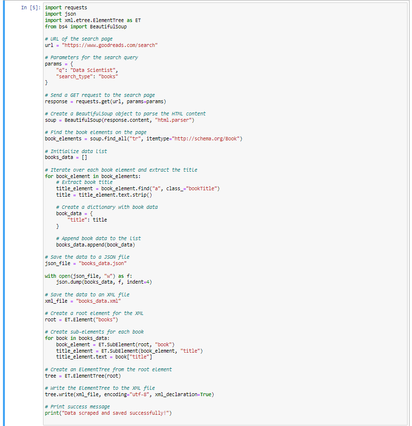
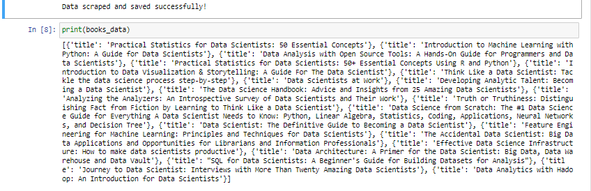

Artefacts
Outcomes from the Team Exercises and activites
Data cleaning
Data cleaning and automating Data Collection
API Security requirements
This is the Data cleaning text.
This is the Data cleaning and automating Data Collection text.
This is the API Security requirements text.
✥ Web Scraping
The procedure of gathering data from the web is called web scraping. To put it another way, it's a programme that retrieves information from websites (often HTML pages) and parses it to find particular information. Web scraping is used to gather data for market research, real estate analysis, corporate intelligence, and other purposes. The tool learned through this module is called beautifulsoup, is excellent at parsing collected HTML data.
Activity:
Instructions: Write a web scraping script in Python using the key word 'Data Scientist' and parse this data into either an XML or JSON file. Perform the web scraping with the beautifulsoup4 and Request program modules.
The provided code demonstrates how to scrape book titles containing the phrase "Data Scientist" from the Goodreads website and save the data into both JSON and XML formats.
Code Functionality:
- Necessary modules are imported, including requests, json, xml.etree.ElementTree, and beautifulsoup4.
- The URL for the search page on Goodreads is defined, and parameters for the search query are specified.
- A GET request is sent to the search page using requests.get(), passing the URL and parameters.
- The HTML content of the response is parsed using BeautifulSoup's BeautifulSoup class, creating a BeautifulSoup object named soup.
- The book elements on the page are found using soup.find_all(), specifying the tag and class attributes that match the book elements.
- An empty list named books_data is initialized to store the extracted book titles.
- A loop iterates over each book element and extracts the title using find() and text.strip().
- A dictionary is created for each book with the extracted title, and it is appended to the books_data list.
- The scraped book data is saved into a JSON file using json.dump() and an XML file using ElementTree.
- A success message is printed to indicate that the data has been successfully scraped and saved.
The codes and results are shown below:
 The code allows for the scraping of book titles from the Goodreads search results, store them in JSON and XML files.
Note that it is crucial to check and understand the website's terms of service to ensure compliance with scraping activities. Otherwise , it is recommended to use websites and APIs that provide structured data.
Practical Use:
As a person working in the hospitality industry, a very typical application of web scraping in this sector is to fetch data from portals for booking and rating holiday offers that are normally not accessible via APIs, such as the TripAdvisor portal mentioned above. These typically include product descriptions and pricing data provided by the portal operators as well as user-generated content, such as reviews. As a result, the data can be used to compare and analyse the quality of various vacation packages as well as, of course, track pricing, which, in turn, allow general trends in the industry to be observed and compared across different regions.
Searching for and extracting the needed text passages using text analysis functions, such as regular expressions, is usually a complex and time-consuming task that is also prone to errors. Therefore, specialized packages including “BeautifulSoup” is a good solution.
Then, the data must undergo several pre-processing steps to be used and analysed by means of a suitable method, for example, regression or classification for predictions.✥ Data cleaning and Transformation
✥ Data cleaning and automating Data Collection
✥ API Security requirements
An API, or application programming interface, is a set of defined rules that enable different applications to communicate with each other. It acts as an intermediary layer that processes data transfers between systems, allowing companies to open their application data and functionality to external third-party developers, business partners, and internal departments within their companies.
A firm can link several apps it uses in its daily operations using an API's definitions and protocols, which saves employee time and eliminates organizational silos that reduce innovation and collaboration. The API documentation simplifies application integration for developers by offering the interface for communication between apps.
Activity:
Instructions: As a team, evaluate the security requirements of an API of your choice and write a brief security requirements specification which mitigates against any risks associated with the API for enabling data sharing, scraping and connectivity between a program code written in Python and any of the following file formats/management systems (XML, JSON and SQL).
As a person working in the hospitality industry, we have evaluated the security requirements of the ReviewPro API, which has been widely used for years. ReviewPro is a tool used by nearly all hotels in the hotel industry to analyze online guest reviews and other guest feedback to enhance guest satisfaction and online reputation. Their API allows developers to integrate ReviewPro's data and functionality into their own applications.
According to the online API documentation, the ReviewPro API follows the following security requirements:
- Authentication: The ReviewPro API uses API keys for authenticating requests. These keys should be securely stored, never exposed publicly, and rotated periodically to prevent unauthorized access.
- Data Encryption: All communication between the client and the API should be encrypted using HTTPS to protect the data during transit and guard against eavesdropping and man-in-the-middle attacks.
However, to mitigate any risks associated with the API, the following security requirements specification must be implemented:
- Use a web application firewall: Implementing a WAF to help detect and block common web-based threats.
- Rate Limiting: Implement rate limiting to prevent abuse and potential denial-of-service (DoS) attacks.
- Input Validation: Enforce thorough validation of all user inputs and API parameters to prevent injection attacks and other forms of malicious input.
- Secure Data Handling: Implement secure practices for data parsing and serialization to prevent data tampering or injection attacks.
- Logging and Monitoring: Log and monitor all API requests and responses, and implement an anomaly detection system to identify potential security threats.
- Access Control: Implement strong access control measures to ensure authorized data access and modification.
- Regular Security Audits and Updates: Conduct regular security audits and promptly patch and update any identified security risks.
Adherence to these security requirements will help ensure that the ReviewPro API securely handles data sharing, scraping, and connectivity between Python code and various file formats and management systems.
PDF for test